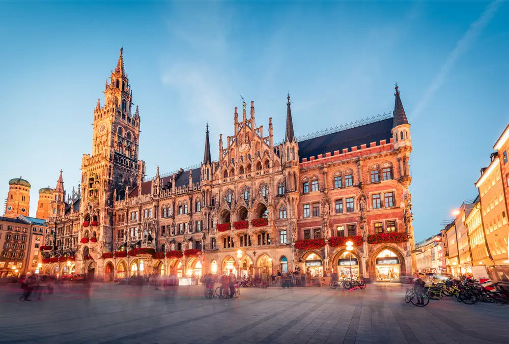

Marienplatz è la piazza principale di Monaco di Baviera fin dal 1158, ed è uno dei luoghi più iconici della città. Situata nel cuore del centro storico, è un punto di incontro per residenti e turisti. La piazza è famosa per la sua atmosfera vivace, le architetture gotiche e neogotiche, nonché per la sua storia che affonda le radici nel Medioevo.
Il punto focale di Marienplatz è il Nuovo Municipio (Neues Rathaus), un imponente edificio in stile neogotico che domina la piazza. Ogni giorno, alle 11:00, 12:00 e 17:00, le figure meccaniche del Glockenspiel, il famoso carillon del municipio, si animano per raccontare storie della tradizione bavarese, come il torneo cavalleresco e la danza dei bottai. È uno spettacolo che attrae numerosi spettatori.
Di fronte al Nuovo Municipio si trova il Vecchio Municipio (Altes Rathaus), che risale al XIII secolo. Nonostante i danni subiti durante la Seconda Guerra Mondiale, il vecchio municipio è stato restaurato e resta una delle strutture più affascinanti di Monaco. Nella piazza spicca anche la Colonna di Maria (Mariensäule), una colonna in pietra eretta nel 1638 per celebrare la fine della dominazione svedese durante la Guerra dei Trent'anni. La statua dorata della Vergine Maria che sovraintende la piazza è uno dei simboli più riconoscibili della città.
Marienplatz è il cuore pulsante di Monaco, dove la storia si mescola alla vita moderna. La piazza è sempre animata, sia dai turisti che dai locali. Nei mesi invernali, la piazza ospita uno dei mercatini di Natale più famosi d'Europa, che trasforma Marienplatz in un luogo magico, pieno di luci, musica e prelibatezze gastronomiche. Inoltre, le strade che partono dalla piazza, come la Kaufingerstraße, sono tra le principali arterie dello shopping, offrendo una vasta gamma di negozi e caffè.